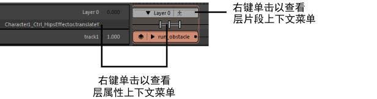

打开“片段层属性”(Clip Layer attribute)上下文菜单

注： 时间编辑器不支持动画层。相反，可以使用时间编辑器片段层改变现有片段上的动画。您无法同时使用动画层和片段层驱动动画，因为这会产生冲突。
- 选择节点
- 用于在“节点编辑器”(Node Editor)中选择关联的名单节点，以便使用自定义的依存关系图 (DG) 网络驱动层属性输入。为此，请选择此选项，打开“节点编辑器”(Node Editor)，然后按 F 键找到名单节点。
注意： 请注意，在按输入和输出连接按钮或取消选择节点之前，不要意外单击节点编辑器或时间编辑器的空白区域。
-
如果在名单中的层属性上单击鼠标右键的同时选择此选项
- 移除属性
- 从选定层中移除选定对象的所有属性。这有助于清理与当前未设置关键帧的属性混杂在一起的层。
- 添加表达式
- 打开“表达式编辑器”(Expression Editor)，以便创建可用于随时间控制层片段属性的表达式属性。有关表达式及其用途的详细信息，请参见动画表达式。
- 编辑表达式
- 打开“表达式编辑器”(Expression Editor)，以便能够编辑表达式属性。
- 移除表达式
- 删除层中的表达式属性。